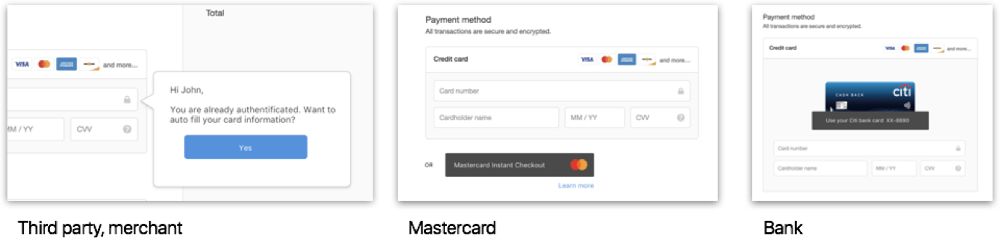

Our goal for this Sprint was to iterate on our prototypes from the first Sprint in order to get better user feedback. We also wanted to improve the onboarding experience in our prototypes, and test language to get a sense of what makes users feel safe, or uncomfortable.
Have we been successful? Let's find out.
UI Prototype V2
The onboarding experience, and the experience of a user's first purchase in a Continuous Authentication paradigm is critical. A big part of that is clear and concise language explaining exactly how the process works, what the value is to the user, and why it is worth giving up all their identifiable data.
How do we demonstrate how Continuous Authentication works?
- How do people respond to being asked to provide their personal data?
- How much background information should we show?
- How can we build trust in a Continuous Authentication interface?
Building on the Haptic Lab shopping prototype from our last Sprint, we created three different checkout experiences branded differently (Generic vs Citibank vs Mastercard) to test how consumer perceptions change.
We also had three different variations on how we notified the user that the website is tracking their data and that they can pay using Continuous Authentication, if they so chose. This was displayed on the home page and would either disappear, or change to a smaller icon when the user began scrolling/browsing the website.
As we found during user testing, this feature was completely ignored! Only one careful, observant user noticed this message in the top right corner of the screen.
Avatar V2
With the old Avatar prototype, we faced a lot of confusion while user testing since we didn't fully explain why users were providing data. So we focused on providing a narrative where the user reading the storyboard can see the value of providing personal data to make Continuous Authentication work.
Questions we wanted to answer with this prototype:How do we onboard users as seamlessly and delightfully as possible?
- How do we demonstrate how continuous authentication works?
- How much background should we show?
- How do people respond to being asked to provide their personal data?
Results
We had a in-class session presenting these concepts to two other Capstone teams, as well as Lee Hillman, the Executive Director of the program. We also user tested these prototypes with 6 users, recruited over Craigslist and Facebook groups. To test the UI Checkout Prototype, we conducted a Think Aloud, where we made the user act as if they were actually buying a sailing ship kite on the Haptic Lab website. For the Avatar, they read through a storyboard that brought the context of use to life. We then had a detailed interview on how they felt and their thoughts on the concepts.
Two very interesting comments came out of our presentation to other capstone teams:
On the UI Prototype:
Is this actually fewer steps?
Avatar concept:
When I think about payments, I don't want to think about payments
These are major, legitimate concerns that we will be addressing in future prototypes.
User Test Summary
Checkout UI:
Onboarding is the most important process for building a correct mental model for how Continuous Authentication (CA) works. We found that people often skip the verbal description of the definition, but they can better articulate the definition of CA after going through an interactive step-by-step process of granting permission to the data being collected. We also found people demand more information on the context and scenarios where continuous authentication could be used to better understand the value.
In terms of how much background information we should show, we found that while people want to know exactly what they are giving up during on-boarding, they don't want to think about payment or authentication while they pay. Showing data being collected every time only reminds them how potentially invasive this technology could be and negatively impacts trust.
On building trust in a CA interface: In general people don't trust merchants for saving their information. Branding the CA checkout process as coming from their bank, or Mastercard helps people build the mental model that information isn't stored on the merchant side. We also noticed social influence being a big factor for building trust. One will be more likely to adopt and trust the technology if many people from their personal network are using it.
Avatar
Users have drastically different opinions on this concept. Some users found the avatars adorable, while others found it insecure to share the app with another person. The insecurity comes partly from not understanding what the app is doing and how Continuous Authentication works.
There was also skepticism that the handoff process - where the CA system can tell between different people holding the same phone - can actually work in reality.
The section where the app asks for permissions, using a greyed-out figure that brightens up as permissions are granted (by tapping on hands, for granting typing pattern data, or the face, for facial data) was universally praised, though we did receive valuable feedback that it might be coercive, and we should be careful when incentivising data sharing like that.
We also found that people weren't as squeamish about sharing their facial data as we thought. This lead us to design our Sprint 3 prototype to test that more thoroughly.
What is Creepiness?
A challenge that still remains is concisely and clearly explaining the value of Continuous Authentication to a person with no technical background.
However, what might be even more difficult to execute is actually attempting to empirically measuring what 'creepiness' is, and what it means to people.
We know that Continuous Authentication has the potential to be extremely creepy, and many authentication methods currently in use, or on the horizon, are varying levels of creepy for different people. That is where the problem lies - everyone has a different definition of what creepy is, and have varying thresholds of when they feel something is creepy or not. Therefore, establishing what creepiness really means is critical in order to compare different design solutions and getting meaningful user feedback on those solutions.
Is it possible to create a scale that brings rigor to our research, instead of just asking people if they feel a prototype or scenario is 'creepy'?
We are still in the process of brainstorming that - and we know from our secondary research that such a thing may not even be possible.
Tech Tinkering
Aroon played around with Microsoft's Emotion API to create an Android app able to recognize emotion in expressions - as demonstrated by feeding different kinds of images to the system.
This technical demo is an exploration on an idea of using an emotion, or expression, to authenticate oneself. For example, just capturing facial data isn't enough - the user also has to smile to be authenticated, a two-factor system providing more security.
Having spent almost 4 weeks on two different concepts, we decided to create an entirely new, refreshing, prototype for Sprint 3. Stay tuned!